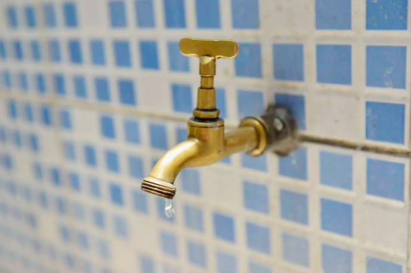

Além da capital mineira, Betim, Contagem, Ribeirão das Neves, Santa Luzia, Lagoa Santa, Vespasiano e São José da Lapa serão afetadas
A partir das 22h desta terça-feira (8), bairros de Belo Horizonte e mais sete cidades da região metropolitana vão enfrentar o rodízio de água. A Copasa explicou que as regiões afetadas ficarão 24 horas sem o líquido.
A medida, conforme a companhia, vai afetar aproximadamente 500 mil pessoas e ocorre por causa do rompimento da adutora do Sistema Serra Azul da bacia do Rio Paraopeba, na cidade de Juatuba, na RMBH.
A previsão é que o rodízio dure ao menos até o próximo dia 20. Veja abaixo como será o revezamento do abastecimento:
De acordo com a Copasa, o rodízio sempre terá início às 22 horas e será encerrado no mesmo horário do dia seguinte. Ou seja, vai faltar água por 24 horas nas áreas atingidas. Além disso, o rodízio ocorrerá por região com abastecimento por três dias a cada quatro dias, ou seja, um dia sem abastecimento.